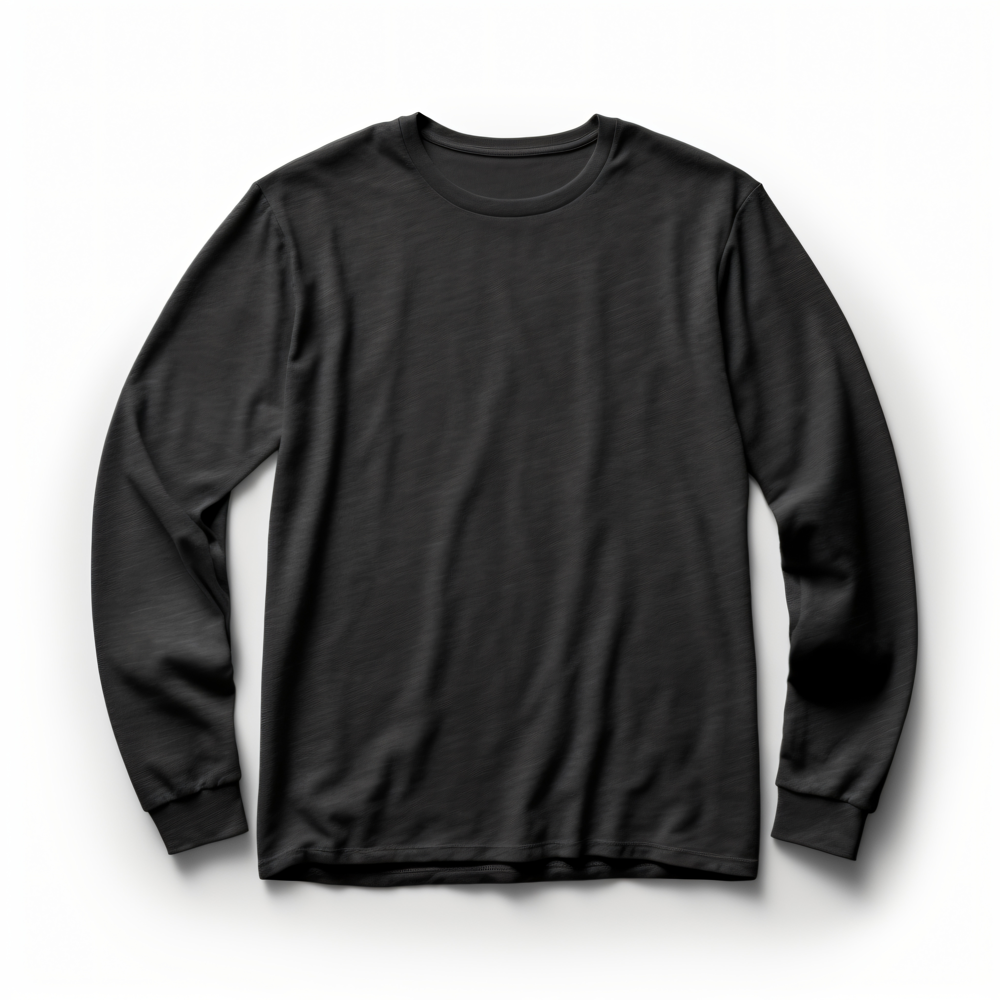
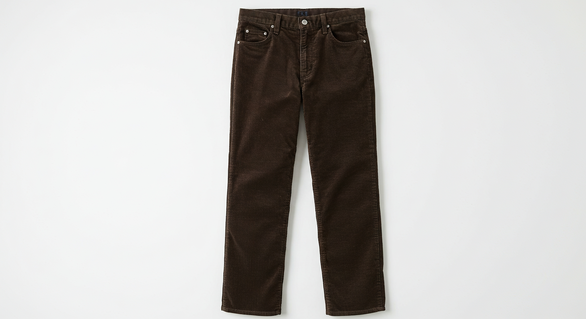
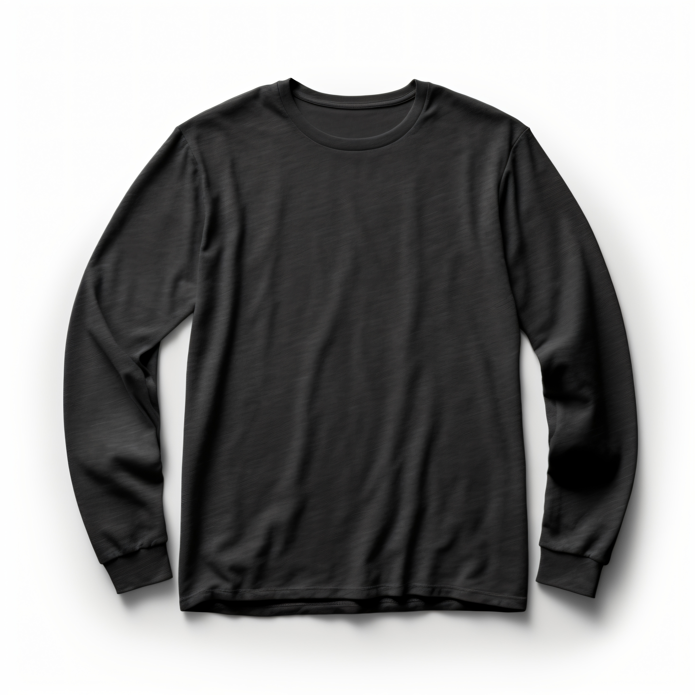
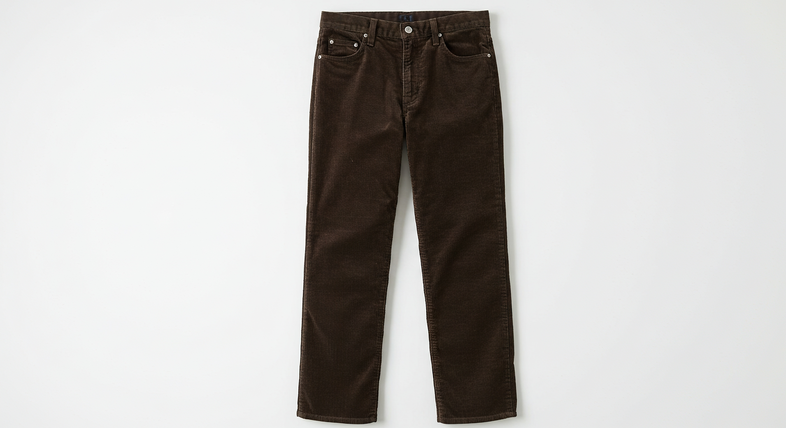
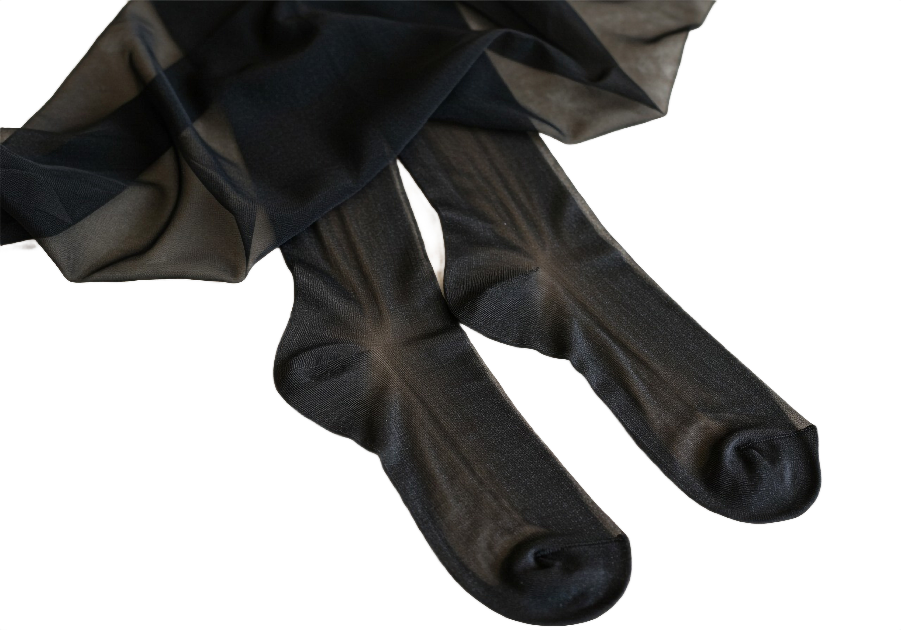
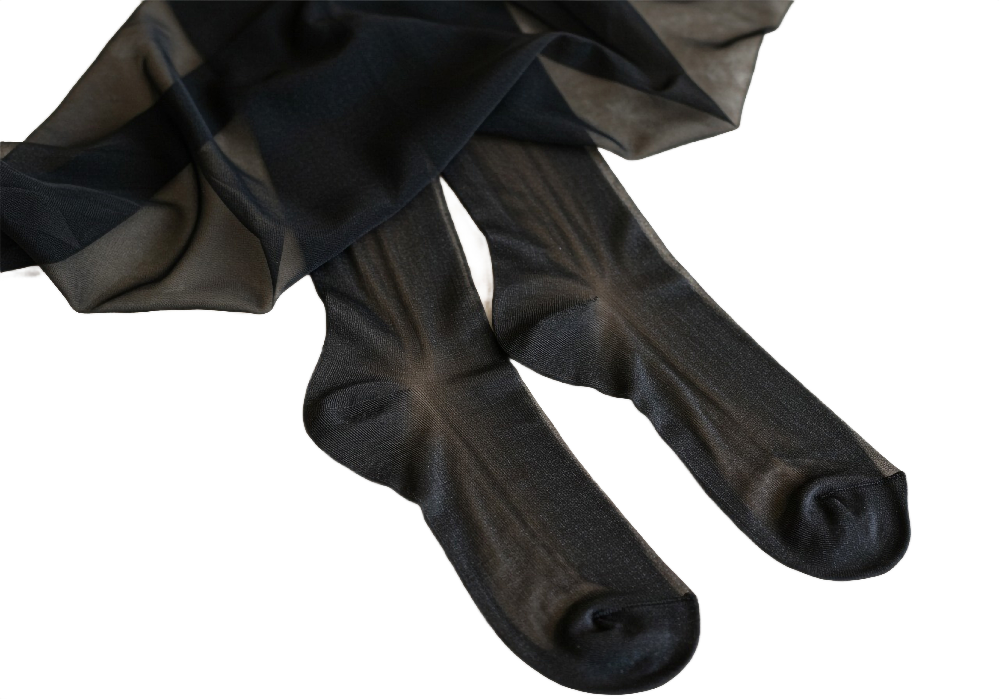
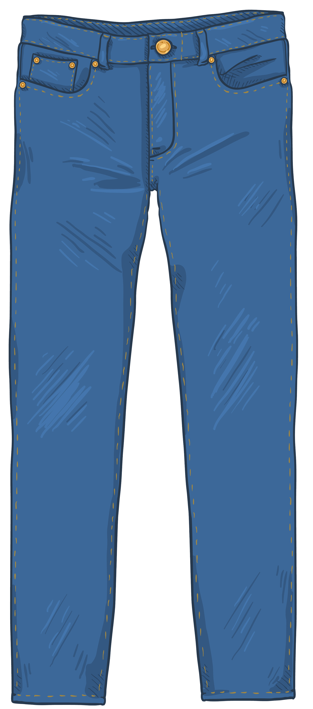
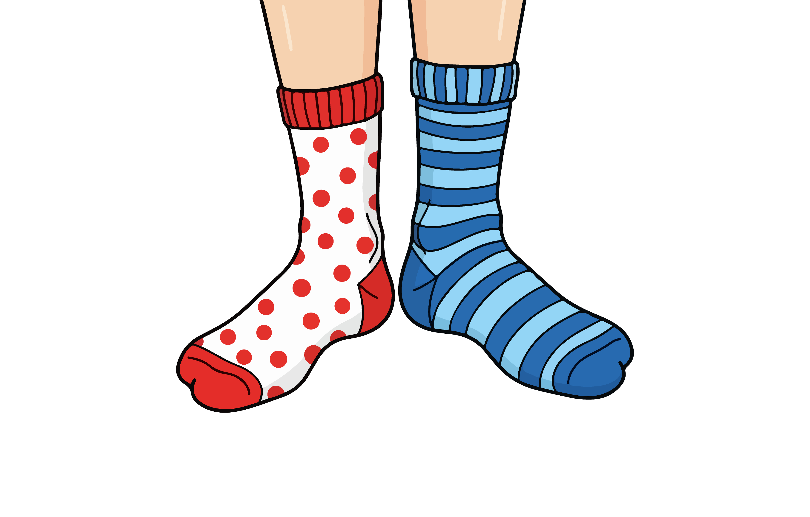
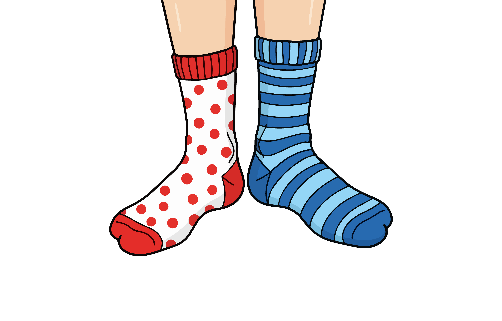

The Stars Hollow Capsule
This page features three distinct style capsules inspired by the cozy, intellectual, and slightly vintage aesthetic of the beloved residents of Stars Hollow from hit show Gilmore Girls. It showcases outfits ranging from ultimate winter comfort and rebellious academic looks to charming local eccentricity, complete with featured items and songs.
The "I Smell Snow" Ensemble
This outfit is an ode to the simple perfection of a Stars Hollow winter, capturing that exact moment when Lorelai declares "I smell snow." It's an ensemble built entirely around cozy, lived-in comfort and a dash of optimistic color to cut through the grey, bland weather. The foundation is a dark canvas, a simple black long-sleeve tee paired with slightly baggy corduroy pants.
Featured Items:
 




Featured Songs:
The "Borrowed From Lane" Rocker Tee
This look is a nod to our favorite music aficionado, Lane Kim, blending her underground rock spirit with the necessity of appearing presentable for a conservative environment, aka, her mom. The style embraces a cozy rebellion, it's smart but not stuffy.
Featured Items:

 

Featured Songs:
The "Ode to Kirk" Casualwear
This look is a nod to the charming, slightly chaotic energy of Stars Hollow's most memorable citizen. It's the outfit for days when you're running five different errands, maybe starring in a short film, and definitely need to be ready for anything, from a town meeting to a strange business venture. The base is simple and practical: medium-wash straight-leg jeans paired with a simple white long-sleeve tee. The chaos, and character comes from the layering piece: The Quirky "Kirk" Vest. This should be a brightly colored, patterned, or highly textured vest (think patchwork, loud fleece, or a unique tapestry material) that adds an immediate, unexpected focal point. It’s an ensemble that beautifully captures the eclectic, found-items quality of the town itself.
Featured Items:

 
